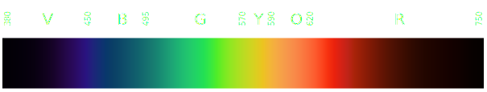
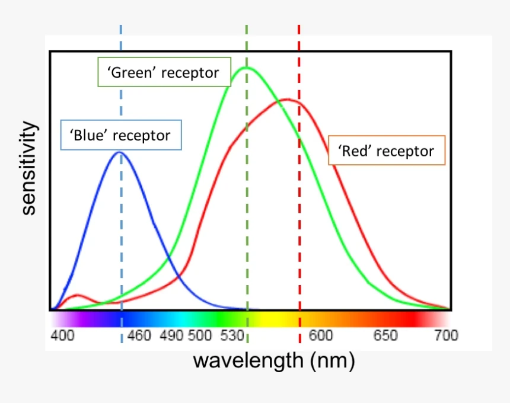
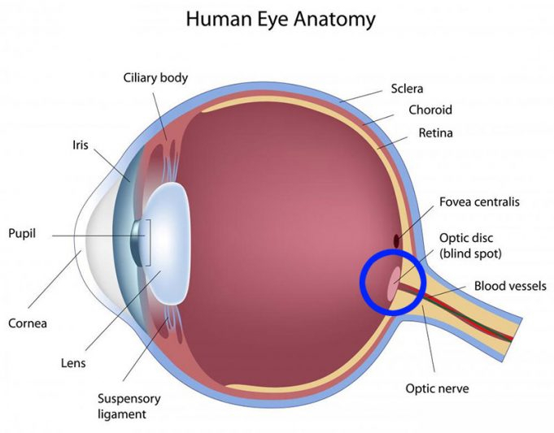
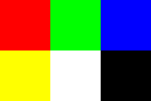
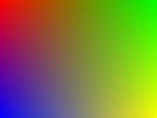

During the whole of a dull, dark, and soundless day in the autumn of the year, when the clouds hung oppressively low in the heavens,
I had been programming alone, on a laptop, a singularly dreary project; and at length found myself, as the shades of the evening
drew on, within view of the interpolated triangle. I know not how it was, but, with the first glimpse of the API,
a sense of insufferable doom pervaded my spirit.
Take a look at this image:

What is it?
Well, it's a teapot.
Is it real?
Of course not.
This teapot was inspired by a real teapot,
but, alas, the image above is not the image of a real teapot.
It's an imitation, an artificial reproduction, a simulacrum, and a convincing one at that.
Does it matter that it is not real? What is the difference between the real and the fake?
I'm not here to discuss philosophy.
No, I'm here to tell you something more important:
You have been scammed.
A trillion-dollar industry has convinced you that you need to pay thousands of dollars to create your own simulacra.
And that you also need to write a thousand lines of code just to see a single triangle.
I am here to tell you that there's another way. That you can do all that by yourself.
I know you already think of me as a hero, and I accept this responsibility.
In your nightmares you use DLSS to upscale your renders, and it brings joy to your heart.
So bring up your terminal, open your favorite text editor, and let's make our own simulator.
You may use an IDE if you wish.
I am not here to teach you all the technicalities involved
in compiling and linking the source code, you will have to learn that somewhere else.
Nor will I teach you how to program in C.
But I will teach you the computer science behind generating images like the teapot above.
No GPUs or convoluted APIs are needed. There is a great joy in writing your own computer graphics code from scratch,
and my hope is to deliver that joy to you.
What is the first step in creating our own matrix?
We don't just want to build a general-purpose simulation, we want to experience it, too.
That means we need some sort of a portal into another dimension -
a wardrobe that opens to Narnia.
There are different ways of accomplishing this. One of them is by creating an image, and then displaying it on an image viewer.
But there are so many image formats, which one to choose?
One of the simplest image formats is PPM.
Here's an example from wikipedia:
| P3 |
| 3 |
2 |
| 255 |
| 255 |
0 |
0 |
| 0 |
255 |
0 |
| 0 |
0 |
255 |
| 255 |
255 |
0 |
| 255 |
255 |
255 |
| 0 |
0 |
0 |
P3 denotes that this is an ASCII file.
3 and 2 are the width and the height of the image, respectively.
255 on the next line means "end of header". That is, everything that comes after this line are the actual colors of the image,
which we discuss next.
What is color? This may shock you when I say this, but, colors aren't real. They don't actually exist.
Colors are no more real than the Santa Claus who gifts you presents (or coal!) every Christmas.
We all partake in a great conspiracy when we open our eyes and see. Colors form an important part of our shared hallucination of the world,
alongside money and religion. It's funny when you think about it: the teapot that you saw earlier is a lie that approximates another lie
concocted by the buzzing of neurons inside your visual cortex.
In the real world we have something called the electromagnetic spectrum,
only a small part of which makes up the wavelengths that the human eye can see:

Worse, the cells within your eye have different sensitivities to different parts of the visible spectrum.
The image below (which I yoinked from simplepsychology.org)
illustrates this nicely:

I inverted the colors so that it doesn't burn your eyes. Here's the real image.
The point is that you may see some colors "brighter" than others.
Also, due to the awkward wiring of the optical nerve, you have been gifted a blind spot:

"But... I don't see any dark patches in my vision?!", you might say.
Well, thanks to this oopsie made by the clunky hand of evolution,
your brain now has to compensate for this by literally filling in the void.
Life decided that it would rather hallucinate than to actually see.
You are already in the Metaverse,
and you have never really touched grass.
By the way, cephalopods don't have this problem.
What I want you to get from all this is that everything that you see is fake: you are fake, I am fake, your Mom is fake...
As long as our delusions don't harm the reproductive success of our species, they will persist,
and we seem to be the only species to use technology to indulge ourselves in artificial delusions.
We went from cave paintings to this
in the blink of an eye (in cosmological timescales).
There is clearly great value in running simulations, especially those that we get to experience.
There are philosophers who think the simulation is the final technology.
That being said, the chicanery of light and color is often too complex for computers to handle
(especially when we want to generate our images fast).
Instead what we do is take the visible part of the electromagnetic spectrum and quantize it based on the intensity of three colors:
RED, GREEN, and BLUE,
to the much chagrin of tetrachromats.
We represent each of these intensities as an 8-bit unsigned integer between 0 and 255.
This gives us a total of 256 * 256 * 256 = 16777216 (~16 million) colors to work with. Not bad.
Take a look at that PPM image again. The first row is:
This array of numbers represents the RED color.
The next row is:
This is the GREEN color.
When we interpret the color information together with the width and the height of the image, we get the following picture:

We now know that to generate images we will need a structure that stores width, height, and an array of numbers that represents the colors.
So, let us do that:
#include <stdio.h>
#include <stdint.h>
#include <stdlib.h>
#include <assert.h>
typedef struct
{
uint8_t x;
uint8_t y;
uint8_t z;
uint8_t w;
}
CgVec4U8;
typedef struct
{
uint32_t width;
uint32_t height;
uint32_t* pixels;
}
CgColorBufferU32;
CgColorBufferU32 cgCreateColorBufferU32(uint32_t width,
uint32_t height)
{
assert(width > 0 && height > 0 && "cgCreateColorBufferU32: width or height is zero");
CgColorBufferU32 colorBuffer = {};
colorBuffer.width = width;
colorBuffer.height = height;
colorBuffer.pixels = malloc(width * height * sizeof(uint32_t));
if (!colorBuffer.pixels) {
perror("cgCreateColorBufferU32");
exit(EXIT_FAILURE);
}
return colorBuffer;
}
void cgClearColorBufferU32(CgColorBufferU32* restrict colorBuffer,
CgVec4U8 color)
{
assert(colorBuffer && "cgClearColorBufferU32: colorBuffer is NULL");
uint32_t pixel = ((uint32_t)color.x) |
((uint32_t)color.y << 8) |
((uint32_t)color.z << 16) |
((uint32_t)color.w << 24);
uint32_t resolution = colorBuffer->width * colorBuffer->height;
for (uint32_t i = 0; i < resolution; ++i) {
colorBuffer->pixels[i] = pixel;
}
}
void cgColorBufferU32ToPPM(const CgColorBufferU32* restrict colorBuffer,
const char* restrict path)
{
assert(colorBuffer && "cgColorBufferU32ToPPM: colorBuffer is NULL");
assert(path && "cgColorBufferU32ToPPM: path is NULL");
FILE* fp = fopen(path, "w");
if (!fp) {
perror("cgColorBufferU32ToPPM");
exit(EXIT_FAILURE);
}
fprintf(fp, "P3\n");
fprintf(fp, "%u %u\n", colorBuffer->width, colorBuffer->height);
fprintf(fp, "255\n");
uint32_t resolution = colorBuffer->width * colorBuffer->height;
for (uint32_t i = 0; i < resolution; ++i) {
uint32_t pixel = colorBuffer->pixels[i];
uint8_t red = *((uint8_t*)&pixel + 0);
uint8_t green = *((uint8_t*)&pixel + 1);
uint8_t blue = *((uint8_t*)&pixel + 2);
fprintf(fp, "%u %u %u\n", red, green, blue);
}
fclose(fp);
}
int main()
{
uint32_t width = 320;
uint32_t height = 240;
CgVec4U8 clearColor = { 255, 150, 255, 255 };
CgColorBufferU32 colorBuffer = cgCreateColorBufferU32(width, height);
cgClearColorBufferU32(&colorBuffer, clearColor);
cgColorBufferU32ToPPM(&colorBuffer, "sample.ppm");
return 0;
}
Running the code above creates the image below:
I converted the PPM to PNG since web browsers can't render PPM images
(maybe some can, but firefox couldn't).
There is a long way to go before our image starts to look like a teapot. But we already have the fundamental structures:
typedef struct
{
uint8_t x;
uint8_t y;
uint8_t z;
uint8_t w;
}
CgVec4U8;
Since C doesn't have namespaces, I name my structures with a two-letter identifier Cg to prevent naming conflicts.
Here, Cg stands for "Computer graphics", but you may use your own naming scheme if you wish.
Next, Vec4 stands for the 4-dimensional vector
(if you need some refreshing on vectors, realtimerendering.com
has a nice PDF that you can read).
Finally, I indicate the type of the elements in the structure: U8, which stands for 8-bit unsigned integer.
Therefore, a 4D floating-point vector can be defined as CgVec4F32:
typedef struct
{
float x;
float y;
float z;
float w;
}
CgVec4F32;
The struct CgColorBufferU32 follows the same convention.
After all, we need a place to store the image, so we will use the pixels pointer
to refer to some place in memory where the image is stored:
typedef struct
{
uint32_t width;
uint32_t height;
uint32_t* pixels;
}
CgColorBufferU32;
Each pixel is defined as an unsigned 32-bit integer (8-bit per channel, with an alpha value that we will discuss later).
Then we define the cgCreateColorBufferU32 function that allocates a new buffer to store the image.
Note that the cgCreateColorBufferU32 doesn't initialize the buffer,
it only allocates enough memory to store the image.
This goes against the "never forget initializing your variables" mantra, but
the values of the color buffer are likely to be discarded and written to anyway,
so it doesn't really make sense to initialize it with default color values.
Instead we have another function that updates the color buffer given a single color:
cgClearColorBufferU32. Note how the 32-bit pixels are generated:
uint32_t pixel = ((uint32_t)color.x) |
((uint32_t)color.y << 8) |
((uint32_t)color.z << 16) |
((uint32_t)color.w << 24);
Here the x, y, z, w
values correspond to the red, green,
blue, and alpha values.
What is alpha? Roughly speaking, the alpha represents the transparency of the image.
That is to say, if there was another image behind our image, then the alpha values
of our image would determine the extent to which the colors of the background image would bleed through our image.
This description is a little abstract, but don't worry, we will look at transparency in more detail later.
Each uint32_t pixel stores the red value in its least significant 8 bits
(assuming that we are programming in a little-endian machine).
Why? For no particular reason. Different applications may use different pixel layouts, and switching between layouts is trivial.
But once the layout is determined, we have to be consistent, and we are: our function cgColorBufferU32ToPPM
assumes the red will be found in the least significant 8 bits of the given uint32_t value:
uint32_t pixel = colorBuffer->pixels[i];
uint8_t red = *((uint8_t*)&pixel + 0);
uint8_t green = *((uint8_t*)&pixel + 1);
uint8_t blue = *((uint8_t*)&pixel + 2);
fprintf(fp, "%u %u %u\n", red, green, blue);
An image with a single color is kind of boring though. We can write another function cgGradientColorBufferU32
that draws a gradient across the image:
void cgGradientColorBufferU32(CgColorBufferU32* restrict colorBuffer,
CgVec4U8 topLeftColor,
CgVec4U8 topRightColor,
CgVec4U8 bottomLeftColor,
CgVec4U8 bottomRightColor)
{
assert(colorBuffer && "cgGradientColorBufferU32: colorBuffer is NULL");
CgVec4F32 topLeftColorF32 = cgConvertVec4U8ToF32(topLeftColor);
CgVec4F32 topRightColorF32 = cgConvertVec4U8ToF32(topRightColor);
CgVec4F32 bottomLeftColorF32 = cgConvertVec4U8ToF32(bottomLeftColor);
CgVec4F32 bottomRightColorF32 = cgConvertVec4U8ToF32(bottomRightColor);
for (uint32_t i = 0; i < colorBuffer->width; ++i) {
float x = (float)i / (float)colorBuffer->width;
for (uint32_t j = 0; j < colorBuffer->height; ++j) {
float y = (float)j / (float)colorBuffer->height;
CgVec4F32 topColor = cgLerpVec4F32(topLeftColorF32, topRightColorF32, x);
CgVec4F32 bottomColor = cgLerpVec4F32(bottomLeftColorF32, bottomRightColorF32, x);
CgVec4F32 finalColor = cgLerpVec4F32(topColor, bottomColor, y);
CgVec4U8 color = cgConvertVec4F32ToU8(finalColor);
uint32_t pixel = cgConvertVec4U8ToU32(color);
colorBuffer->pixels[j * colorBuffer->width + i] = pixel;
}
}
}
We can create gradients by linearly interpolating between the given color values.
To understand linear interpolation better let us interpolate between two real values, say a
and b. We can define k as another real value,
between 0.0 and 1.0, that denotes the amount of interpolation to do.
You can think of k as the distance to travel from
a to b.
When k equals 0, we don't travel at all, so we return a.
When k equals 1, then we travel the full distance, and thus we return b.
If k equals 0.5, then we travel half the distance, so return the half of a
plus the half of b.
In our case we are trying to interpolate across a two-dimensional surface (our image), so we have two ks.
We can calculate these ks by dividing the position of the current pixel
(i and j) by the width and the height of our image.
This works because i will always be between 0 and the width of the image,
so dividing i by the width will always yield a value between 0.0 and 1.0
(technically speaking, we will never reach 1.0, since i will never be the width of the image, but this is okay, because it will get
very close to 1.0 anyway. If you're bothered by this, you can instead divide by (width - 1), which will produce the correct interpolation).
The same remark applies to j: diving j by the height of the image will also produce a value between 0.0 and 1.0.
Now we can use these ks to linearly interpolate between the given color values.
Because ks are floating-point values, it's best that we convert our colors to their
floating-point equivalents as well, lest we litter the codebase with type casts.
Instead we hide the casts in functions, e.g. with cgConvertVec4U8ToF32:
CgVec4F32 cgConvertVec4U8ToF32(CgVec4U8 v)
{
CgVec4F32 r = { .x = (float)v.x,
.y = (float)v.y,
.z = (float)v.z,
.w = (float)v.w };
return r;
}
The linear interpolation is computed by the cgLerpVec4F32 function:
CgVec4F32 cgLerpVec4F32(CgVec4F32 p,
CgVec4F32 q,
float k)
{
CgVec4F32 r = {
.x = (1.0f - k) * p.x + k * q.x,
.y = (1.0f - k) * p.y + k * q.y,
.z = (1.0f - k) * p.z + k * q.z,
.w = (1.0f - k) * p.w + k * q.w
};
return r;
}
Notice how when k equals 0, we return the first value (p),
and when it equals 1, we return the second value (q), and for the remaining values of
k it is a mixture of both.
Once interpolated, we convert the CgVec4F32 back to CgVec4U8
using cgConvertVec4F32ToU8:
CgVec4U8 cgConvertVec4F32ToU8(CgVec4F32 v)
{
CgVec4U8 r = { .x = (uint8_t)v.x,
.y = (uint8_t)v.y,
.z = (uint8_t)v.z,
.w = (uint8_t)v.w };
return r;
}
But since we store pixels as uint32_t values, we need to convert our CgVec4U8
to a 32-bit unsigned integer via cgConvertVec4U8ToU32:
uint32_t cgConvertVec4U8ToU32(CgVec4U8 color)
{
uint32_t pixel = ((uint32_t)color.x) |
((uint32_t)color.y << 8) |
((uint32_t)color.z << 16) |
((uint32_t)color.w << 24);
return pixel;
}
If we use RED for the top-left color,
GREEN for the top-right color,
BLUE for the bottom-left color, and
YELLOW for the bottom-right color, then cgGradientColorBufferU32 will produce the following image:

You need to understand interpolation well, because we will use it again, albeit for a different geometry.